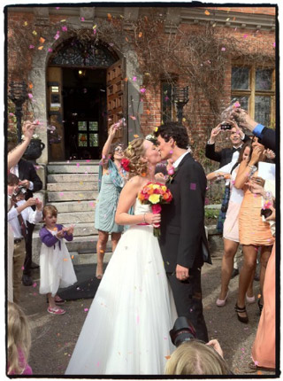
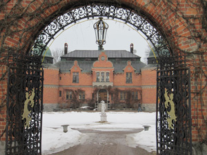
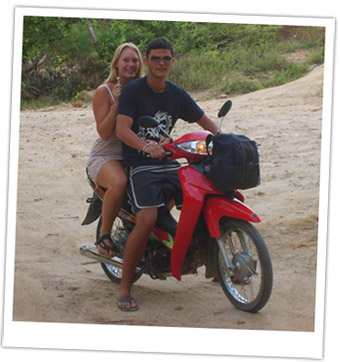
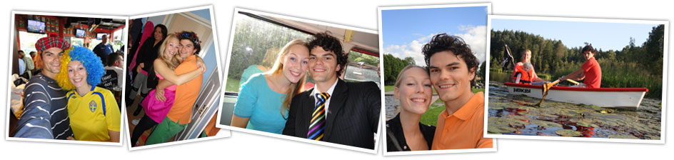

Just Married!
Posted on 30th May 2011

Once again we'd like to thank our families for the massive effort and help with everything, our awsome toastmaster Robin for arranging the speeches and all so well, our fantastic bridesmaids, ushers and Andy's best man Neil for just being awesome! Finally we'd like to thank everyone for coming and helping making this a memory for the rest of our lives. We love you all!
Lots of love
Mr & Mrs Billinger Wilson
PS. More pics will be posted soon.
We're off to get married!!
Posted on 27th May 2011
After a couple of intense days we're now heading down to our fairy tale castle to meet up with friends and family and get married!! :D This is going to be epic, see you on the other side!
XXX
A couple of nerve wracking days…
Posted on 26th May 2011
The last couple of days has been absolutely nerve wracking for us, since we found out about the volcano eruption on Iceland who’s ash clouds threatened to stop all the flights! But it seems to be fine now and we keep our fingers crossed it stays that way, just the thought of all of our family and friends that are flying from England, Ireland, Scotland and Spain not being able to make it is horrible!
As most of you already know, this isn’t the first time the Icelandic volcanoes are causing trouble for us. Last year we got ashed in on Sardinia on our engagement trip. That time it lead to a quite fun road trip through Europe, but still, what are the odds of us getting problems with the volcano again!?
So anyway, most of the family arrives today, and the rest tomorrow, and I’m sure we’ll both shed a little tear of joy and relief when everyone’s here :)
One week left!!
Posted on 21st May 2011
Wow, we can hardly believe it’s only one tiny little week left now to our wedding day! We’re getting more and more excited each day :)
We’re doing a great job finalizing all the little bits and pieces at the moment, it really is quite a few things to do...
Apart from that we’ve done quite a few things in the evenings this week; on Monday we went bowling with friends, on Thursday we went to see Glasvegas who we’re amazing! And yesterday we had a small welcome do for a friend who came back from 6 months travelling.
In the next couple of days we’ll be focusing on getting the last few things ready so that we’ll have some time to relax before everyone arrives :)
Boooooooh!
Posted on 19th May 2011
To get married in an old castle feels very exciting. Aside from the rich history and beautiful location, Rockelstad has a few ghosts just like most old castles.
We’ve heard reports from the owners of Rockelstad that at least 3 ghosts exist in and around the castle, luckily all of them are nice :)
So keep your eyes open (or closed) because this may very well be more exciting than you could have ever imagined...
Wedding kick-off party :)
Posted on 11th May 2011
On Saturday some friends arranged a wedding kick-off party to give people a chance to get to know each other before the big day. It was a fantastic! We started the day playing boule and drinking cocktails. Despite losing to Amanda’s team it was great fun (or did we let them win?).
After the boule bonanza we sat down to eat a delicious meal, the lamb burger was spot on! Finally, we rounded off the evening with dancing to some of the cheesiest hits Stockholm has to offer! Thanks for the great initiative guys, we had a spiffing time!
So close but yet so far away...
Posted on 4th May 2011
Some of my (Amanda’s) dearest friends are out travelling and studying in various places in the world at the moment, fulfilling their dreams and experiencing great adventures. Luckily for me they're all coming back just before the wedding, and I can't wait to see them again!! So thank you girls for making it back in time for our big day, it means the world to me <3
Only one month to go!!
Posted on 28th April 2011
Wow, time is absolutely flying and now there's only one month left before our big day :D No hysterical bridezilla or groomzilla moments, and the wedding nervs are nice and calm ;) This is going to be a blast!
We can't wait for what will definately be an epic weekend. Although we're really looking forward to the actual wedding, what's almost better is that we'll have so much time to spend together with all of our friends and family in one place <3
Hope you're all as excited as we are! XX
We will rock you
Posted on 24th April 2011
We’ve just got home after an awesome weekend in lovely England. Together with both of our families we’ve spent the weekend picnicking, shopping, fishing, visiting Cambridge and watching the We Will Rock You musical in London! It’s been truly great to spend some time with both of our families now before the wedding and everyone seems as excited as we are :)
In fact, it’s not long left now, 4 weeks and 6 days!! But we’re chilling out as pretty much everything is sorted, it seems like we got away without any bridezilla or groomzilla moments ;) But I suppose there’s still time for a bit of that, haha!
 Colourful photo session
Colourful photo session
Posted on 17th April 2011
This afternoon we met up with our brilliant photographers for a short but sweet photo session on beautiful Djurgården in Stockholm. It was great to see them in action, they are absolutely fantastic and made it very easy for us :) We're sure the pics are going to look fab!
Check out their cool new website to see some more of their work: http://2brides.se/
Stagtastic!
Posted on 6th April 2011
Last weekend was my stag do and what a weekend it was! Neil did a fantastic job getting everybody tsogether in Oxford and organising some great events.
First up was the hovercraft racing, which was great fun, although we did manage to break one of the hovercrafts (I won’t mention any names, eh Johnson).
The second event of the day was the Rage Buggy racing. It was absolutely mental and involved throwing a small dune buggy around a very bumpy course, at high speeds. Again there was a minor mechanical failure as one of the wheels fell off a buggy, half way around a corner and going at full speed (this time it was driven by King). I think we might have dented their profits for the day! :)
After the adrenalin pumping events were out the way we started on the serious business of drinking... a lot! The drinking session was only briefly interrupted by a hog roast at a small pub in Oxford. The night ended in a bit of blur in some of the bars around Oxford... I hear there were some pretty amazing dance moves being thrown on the dance floor.
Celebration 1000 visitors!
Posted on 1st April 2011
Wowza! Themandys.com has now had 1000 unique visitors!! Or 1631 visits from 33 countries in five continents! How about that!? Our little project has become far bigger than we ever thought was possible :D
These are our visiting countries; Sweden, United Kingdom, Finland, United States, Norway, Germany, Russia, Spain, Ireland, Canada, Italy, Australia, France, New Zealand, Serbia, Greece, Netherlands, Poland, Denmark, Switzerland, Estonia, South Korea, Belgium, Romania, Thailand, Portugal, Fiji, Egypt, Trinidad and Tobago, United Arab Emirates, Vietnam, Japan and Israel.
Planning planning planning...
Posted on 28th March 2011
With pretty much all of the practical details sorted we’ve now moved on to the planning part. Including things such as dinner seating plan, the day after brunch, to do lists, packing lists, song lists and so on. The wedding documents folder on our laptop is getting bigger and bigger…
Planning and preparing is fun, especially when it comes to practice our dancing! At the weekend we spent one morning dancing in our kitchen to various songs we’re thinking about for our first dance. Some of our amateur-waltz-moves were doubtfully more interesting than others... Graceful? I don’t think so! But definitely fun, haha!
A weekend in sunny Newquay
Posted on 21st March 2011
This weekend we went to Newquay for Jack and Rebeccas wedding celebration. And what a weekend it has been; sunny and really nice and warm so we sure enjoyed our time by the sea:) The beach bar party was great fun with a fab live band, plenty of delicious food and lots and lots of dancing. Thanks for a great weekend guys!
What a weekend!
Posted on 14th March 2011

This weekend we had Andy’s parents over from England, and (as always) it’s been great <3 They’ve been helping us with decorations and wedding planning.Yesterday we picked up my mum and we all went down to have a first meeting with our wedding officiate. His name is Mikael and he seems super - nice, perfect English and good fun, that’s our guy :)
After that we went to Rockelstad castle to meet the owners and to have a look around. Our parents were very impressed! Although it’s so different in the winter, it’s really quite hard to imagine that in only a couple of months it will all be lovely and green outside and hopefully quite warm too...
Woohoooooo!!
Posted on 5th March 2011
I bought my wedding dress today and it’s the most gorgeous dress in the world, I LOVE IT! :D
Cakeilicious
Posted on 3rd March 2011
Things are going great! So many things are happening now and with less than three months left things are starting to feel so real suddenly :) It’s all very exciting and friends and family are absolutely great, offering us help with different bits and pieces and giving us good advice along the way.
Today our fantastic caterer came by with some wedding cake samples for us to try and we loved them! So we have decided on one and it’s going to be awesome.
Another big thing this week is that Andy’s waistcoat and cravat arrived yesterday so his outfit is now completely sorted apart from the shoes. The clothes looks great and he looks great in them!
Gold digger :)
Posted on 22nd February 2011
I went for the first fitting of my new wedding ring last week. Although it’s still quite rough at the moment and the diamonds aren’t in place yet it felt fantastic! We discussed the height of the ring, how to place the diamonds and other details, it’s going to be gorgeous!
Suddenly everything starts to feel so real :D It feels like last week we had 6 months until our wedding, and now when it’s only three months left, I have no doubt that time is gonna fly past! I can’t wait until March when we’re visiting the castle, and even more important - our wedding officiate!
Will you be my valentine?
Posted on 14th February 2011

It’s valentine’s day (our fifth one together) and as usual Andy has spoiled me rotten with flowers, sweets and a fancy dinner :) It’s freezing cold here in Stockholm today, minus 15 degrees!Our first valentine’s day together, back in 2007, was really quite different... We were out travelling and at the time we were in Thailand. That day we had rented scooters to explore the island together with our friends. We saw waterfalls in the jungle, played volleyball and made a fire on a deserted beach. Maybe not the romantic valentine’s day one would imagine, but it sure was a fantastic day!
Lots of love,
The Mandys
So much to do :-)
Posted on 10th February 2011
Things are still going smoothly, last night we sat down and started to work on the design for the name cards and table number signs. It’s great fun and we have heaps of ideas that we love, maybe too many… ;) One thing that is for sure is that it’s going to be colourful... surprise!
We’ve also done a preliminary schedule for the big day, and there sure is plenty to do! However, I have promised Andy at least a little bit of fishing while I’m away getting my hair and makeup done, the rest of the fishing will have to take place on the Friday or Sunday. For those of you who don’t know, Andy is a keen fisherman and used to spend all weekends by the river together with his brother and friends. One of them has even bought a special travelling fishing rod to bring for the wedding weekend, since the castle is right on a big lake. For the rest of the guests there are plenty of other activities during the weekend, such as old fashioned bowling, tennis, canoeing, swimming in the lake, rent a Segway and much more.. Plus hanging out with friends and family of course <3
English anyone?
Posted on 6th February 2011
After searching for over a month we finally managed to track down and book a fluent English speaking wedding officiate. It was trickier than we first thought but luckily we found our guy in the nearest town and he seems great!.
When my parents visit us in mid March we’re all going down to Rockelstad to have a look around and also meet with our officiate to sort out the papers and introduce ourselves properly.
A break from the planning...
Posted on 28th January 2011
This weekend we’re taking a well deserved break from all the wedding planning. Together with Andy’s brothers and their girlfriends we’re off snowboarding for four days :D It’s the Fifth year in a row, and the fourth year I’m snowboarding so I’m pretty confident now :)
We have a really fun spring ahead of us with quite a few visits to look forward to; this weekend we’re snowboarding, in the end of February we’ve got two friends coming over from England for the weekend, a couple of weeks later Andy’s parents are coming to visit and shortly after that we’re going to England for some good friends wedding celebration in Newquay!
Besides all of that we’re planning our wedding :) Although, we’re done with all the big bits now really so we have things like sorting out the cake, decorations and other little bits and pieces.
Ring-a-ding-ding!
Posted on 23rd January 2011
This week Amanda and I ordered our wedding rings, mine is a plain gold band from Ernest Jones and Amanda's is a bit fancier :). It will be made by a friend of the family and excellent goldsmith so it's sure to be amazing. We should receive my ring this week and Amanda’s should be ready to pick up in a few weeks, so we're looking forward to that!
What a productive week!
Posted on 16th January 2011
Well it's been a very productive week from a planning point of view. We've managed to arrange the DJ, waistcoats, cravats, cufflinks, socks (groovy ones), hair & makeup and wedding officiant :)
With all of this sorted we're starting to feel like everything is coming together nicely. The more we can get ticked off now the less stress we'll have later, at least that's the plan.
There will be a wedding!
Posted on 11th January 2011
We have now got a wedding officiant so not only will it be a groovy party, there will also be a wedding! :)
Flights!
Posted on 5th January 2011
Hi folks, good news! Flights to Sweden are now available for our wedding weekend :) The best option is to fly with Ryanair to Stockholm Skavsta (NYO) as Rockelstad is just a 35 minute drive North from the airport. Take a look at the information page for links and more info.
Back home again...
Posted on 4th January 2011
...after a great week in mighty England. And what a succes on the wedding front! We finished the invites and got them all ready to go, I got a pair of lovely shoes, and we found the perfect suit for Andy and his bestman and brother Neil :) Not bad at all!
However, time to get started on some of the other stuff now, such as finding a DJ, minister, hairdresser and so on... Hopefully we've got most things sorted by the end of this month so that we can chill out for a while before we start on the decorations, table placements and party planning :)
So long for now!
Happy New Year!
Posted on 31st December 2010
We’re just getting ready for tonight’s party with great friends and lots of bubbly :) What a great year it has been! The family get together in London, our engagement in Sardinia, the lovely camping trip on the Swedish west coast and loads of fun times with friends and family <3
2010 truly has been a fantastic year but with the wedding fast approaching we’re sure that 2011 will be even better!
Merry Xmas to you all!
Posted on 23rd December 2010
The meatballs are done, the sweets on the table and all the pressies are wrapped. Outside it's freezing cold and beautiful with heaps of snow, and best of all - Andy made it home for Christmas!
For a while we thought we'd have to spend Christmas apart, Andy got caught up in the snow chaos in England after his work Christmas party and couldn't make it home until three days later than scheduled. Fortunately Stansted airport was up and running again quite soon, if he would have flown from Heathrow he probably wouldn't have made it home in time...
We couldn't be happier, so from the bottom of our Christmassy hearts we wish you all a very merry Christmas filled with joy, laughter and loads of goodies :)
Love the Mandys
Too much? ...Yes!
Posted on 15th December 2010
Haha, we saw this in the paper the other day and thought it was really funny, but the worst thing is we've actually seen a woman wearing something very similar at a wedding we went to!

Dressed for success
Posted on 6th December 2010
After looking around in every single wedding dress shop in Stockholm, it’s clear that there are tons of gorgeous dresses, many that I would be happy enough to wear. But none that are perfect. Instead I found the perfect dress online; it’s an American designer and is not sold anywhere in Europe. I’ve kept my eyes open for a dress like that but nothing can even compare...
But shame on the one who gives up, instead I found a dressmaker that can custom make the dress for me, and for a very reasonable price as well :) So not only do I get the best dress in the world, i get it special made for me. And the best of all - it has got pockets! I love pockets! :D
6 months to go!
Posted on 28th November 2010
Today it’s exactly six months left to our big day :D Exciting!! So far we’re sticking to the schedule and have ticked off a bunch of things from the To-do list. There’s still plenty to sort out, but we’ve got plenty of time, so no stress or bridzillas/groomzillas just yet ;)
Sorted: time and date, location, party venue, hotel, guest list, invites (design ready and will be sent out soon), colour scheme, bridesmaids, ushers, best man, shoes, photographers, catering, bridesmaids dresses and more...
Things left to sort out: minister, DJ, dress, suits, flowers, cake, decorations (we have started but got more to do..), hairdresser, rings, transportation (we know what to do, just need to book it) and probably loads more...
This little thing called budget...
Posted on 24th November 2010
This budget thing is obviously very good to have, and so far we’ve been sticking to it when choosing photographers, catering and so on. But then there are all the little things that we didn’t take in to account, such as evening snacks, stamps and accelerating gold prices!
Without all of the these little extras we wouldn’t have had any problems sticking to the budget, but now I suppose we’ll be just like every other couple and need to stretch the boundaries a touch :)
Oh well, it’s not every day you get married, so it’s worth it, but expect some consequences, MOAHAHAHAHAHAHAHAHA!
At least we won’t go hungry!
Posted on 14th November 2010
We’re happy to say that we now have the caterer booked up for the big day which is great news for us all :D
We decided to choose an experienced Stockholm based catering company, they have many great ideas so I’m sure we’ll all enjoy what they have to offer!
Today we returned from England after attending Carl and Jane’s wedding at Woburn Abbey. It was a fantastic day packed with fun and original additions including pasties as a starter, paper lanterns for all the guests and an excellent caricaturist. Thanks a lot for a great day guys!
Huge in Japan
Posted on 3rd November 2010
Wow! In three months we’ve had over 550 visitors from 23 different countries in 5 continents :D
We’re hoping to get at least one visit from each continent, even though we’re aware of the fact that Antarctica might be a tad tricky :P but at least we should be able to pin down South America. Below you can see a map of the countries we’ve had so far.
Here are the countries we’ve got: Sweden, Britain, Ireland, Finland, Norway, USA, Canada, Germany, Holland, Spain, Portugal, Romania, Switzerland, Serbia, Greece, Vietnam, New Zealand, Australia, Egypt, Trinidad & Tobago, Estonia, Poland, JAPAN!
Mums filibabba!
Posted on 26th October 2010
Today we booked a meeting with a potential caterer so with a bit of luck, in a couple of weeks we’ll have it all booked up :)
They seem fab, service minded, fun and have great ideas for the food! And another plus is that they have catered at Rockelstad castle before.
Once we get this sorted we’re done with all the big bits and we can start focusing on the smaller details. Groovy!
Cake ahoy!
Posted on 12th October 2010
Next on our list is deciding on the sort of cake we would like. As both of us are partial to a bit of cake from time to time we’ve got plenty of ideas, but the main thing to do now is try as many cakes as we possibly can.
It would be rude not too...
Time to get creative
Posted on 10th October 2010
Hiya!
We met up with our fantastic photographers the other day to sort out the last details of the contract and it’s now being sent to us as we speak. They are absolutely brilliant and have heaps of cool ideas on how we can make our day even more special, the creative juices are flowing ;)
We’ve also started looking for rings, we have got a good idea of what we want but haven’t quite found it yet...
Toodledo for now!
Keep up-to-date with the latest happenings...
Posted on 2nd October 2010
Hey folks!
We've come quite far in our planning now, as you know we've already booked the venue, organised photographers, started looking for caterers and much more... What's even more exciting is that I (Amanda) have started hunting for the perfect dress :) and today we began planning our invitation design.
We hope to be updating this page fairly often to keep you posted on the ongoing planning.
Love The Mandys
